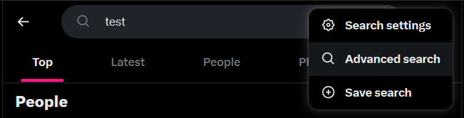
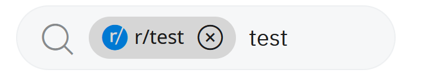
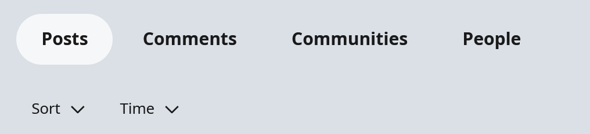

Some Basics
For the most part you're gonna just be keyword searching like you probably already know how to do. Some sites have neat features that can help you get very specific (and some sites don't let you get very specific at all). Twitter is by far the strongest of the bunch with a very robust menu for searching. Others like Pinterest and Instagram will be barebones.
When you do have the option, things like date ranges can help you get results from a variety of time periods to demonstrate things like the evolution of the meme you're analyzing. When available its also super useful to use different sorting options for how search results are ranked, such as Reddit's Best, Hot, and Top categories.
Link to Twitter Advanced Search
Twitter has a great advanced search menu with simple explanations beneath each input. Inputs to note would be words, hashtags, 'from these accounts', engagements, and date ranges.
Twitter also has the option to sort your results by Top, Latest, People, Photos, and Videos. The photo category will probably be very useful for this project.
To get back to advanced search just click on the 3 dots next to the search bar. To see these dots though you need to have already done a search. So to access advanced search form the front page make a regular keyword search from the bar on the right.
Here's a more in depth guide and here's the official twitter help page on search
Reddit does not feature an advanced search menu like twitter. Similar features are still available, but you use just the search bar and 4 category options.
Keyword search is the main method since Reddit does not use hashtags. Luckily you can also search by subreddit. By typing r/[name of subreddit] and hitting space you'll see an icon like this (see below) appear with the subs name on it. Any further keywords typed after that will search within the sub.
 After putting in your keywords there's 4 buttons to narrow your search: Posts, Comments, Communities, and People. The latter 2 are omitted when doing a subreddit search. Directly beneath those options are the sort and time filters that can help you find new or popular posts from certain time ranges.
Here's the reddit wiki on searching
Pinterest features the weakest search tools of the bunch with only keyword search being available. Put words in and see what the algorithm serves you. ¯\_(ツ)_/¯
Instagram does not exactly have an advanced search feature. Instead, it relies mainly on keyword and hashtag search. Type in words or put a #hashtag in front of a word to search it. That's it really.
There used to be categories like Top, People, Tags, Places to organize your search results but they've since removed those to try and simplify searching on Instagram.
I have no more in depth guide for you on this one. The one's that do exist seem to be for old versions of the app, or just focus on being successful in the Search and Explore algorithm.